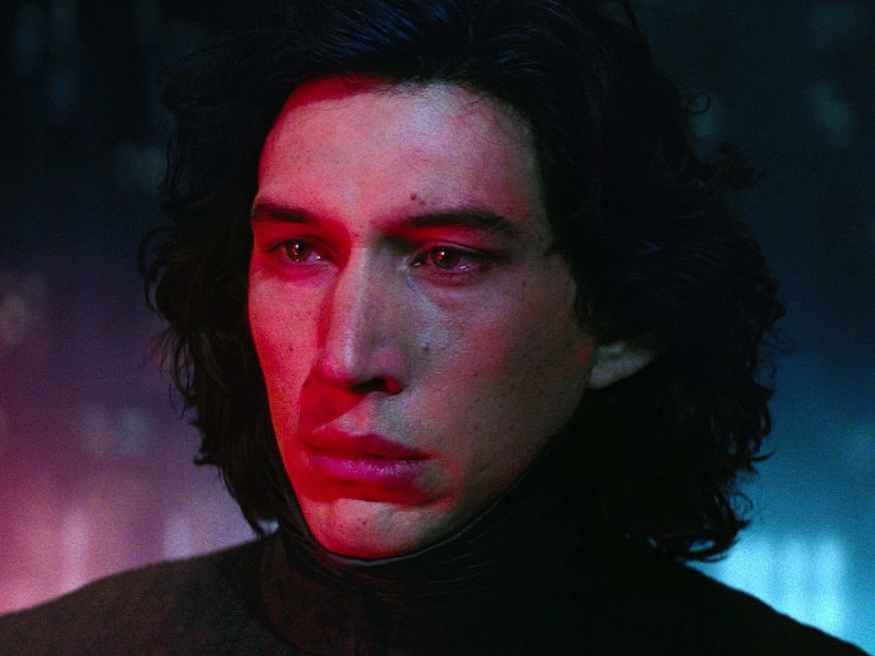

References

Home
Draco Malfoy
Kylo Ren
Lucifer Morningstar
References
Draco Malfoy: The Underrated Character
Pottermore on Draco Malfoy
Draco Malfoy as he grows
Harry and Malfoy had a lot in common
Force Imbalance in Kylo Ren
The constant struggle between Light and Dark
The pull of light is unmistakable
There is still hope for him
Lucifer: The Punisher of Sin
The War in Heaven
Lucifer's Desire to be free made him 'Devil'